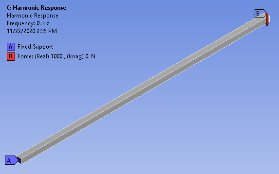
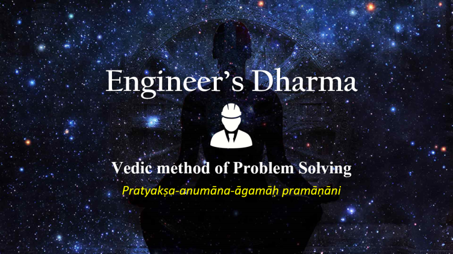

Portfolio
What have I been up to lately?
Look here for a collection of my latest projects, exercises, articles, and more.

Design Optimization with Neural Nets
Article on Medium
Vedic Method of Problem Solving
Engineer's Dharma
Solving Navier Stokes with Stable Fluids Algorithm in Python
Discusses Jos Stam’s Stable Fluids algorithm, which enables real-time interaction with three-dimensional fluids by using unconditionally stable solvers built from a mix of Lagrangian and implicit techniques.
Fluid Dynamics, PhiFlow, Stable Fluids